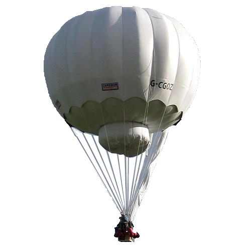
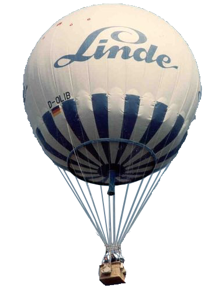
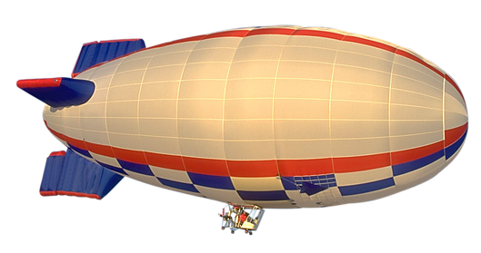
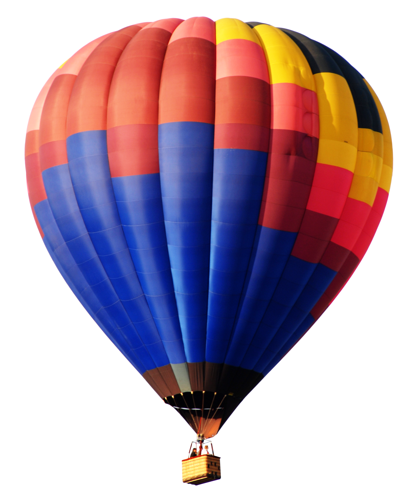
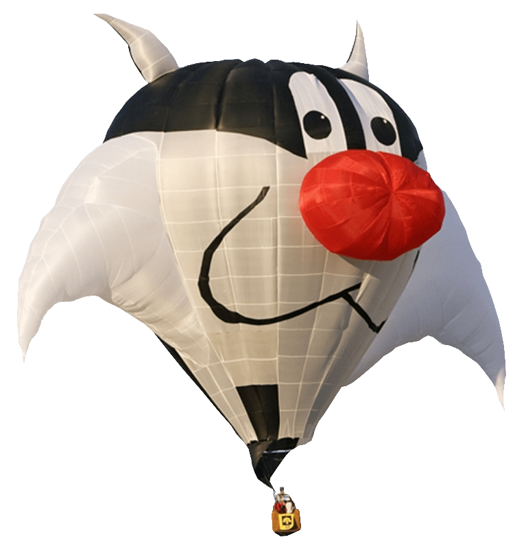

Gázballon
Korábban hidrogén gázzal töltötték fel (Ebbe a csoportba tartozik a tragikus sorsú Zeppelin is). Tekintettel a hidrogén baleset- és égés veszélyességére, erre a célra már a hélium gázt használják. (éghetetlen nemesgáz) Ez a ballonozásnak az a fajtája, ahol a süllyedés megfékezésére a ballasztot (homok) ki kell dobni, hiszen a süllyedés érdekében kieresztett héliumból vissza már nem tudnak szerezni, és csak így tudnak könnyíteni a ballon súlyán.


- Az irányítható hőlégballon-t, amely szivar alakú, valamelyest a Zeppelinek formájára hasonlít, és minden esetben szélmotorral hajtják. Nem túl erős szél esetén vissza tud repülni a felszállási helyére.
- A másik változat az irányíthatatlan hőlégballonok csoportja. (motor nem segíti a haladását, irányítani a rétegszelek ismeretében - korlátozottan - lehetséges.)
Ezeknek is 2 további - alak szerinti - kivitelezési módjával találkozhatunk.
- Formaballonok, (még ház vagy kamion alakúak is lehetnek...)
- A legelterjedtebbnek számítanak, a színes gömb alakú ballonok.

irányíthatatlan légballon

gömb alakú ballon
